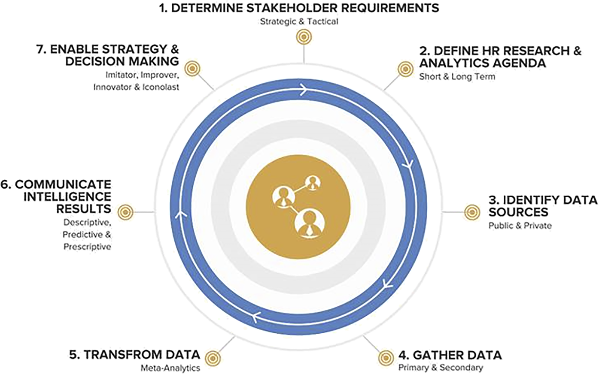

These notes are from an article that introduces the HR analytics cycle as a simple and organized process for gathering, analyzing, communicating, and using evidence-based HR research and analytical insights to help organizations achieve their goals.
The meaning of HR Analytics
HR analytics is a new field that involves collecting, analyzing, and visualizing data to make informed decisions. It also includes conducting ethical research based on evidence.
HR Analytics cycle
This article presents the HR analytics cycle as a seven-step process to help organizations develop their HR research and analytics capabilities. This enables them to make evidence-based decisions and execute their business strategy more effectively. It involves determining stakeholder requirements, defining an agenda, and executing HR research and analytics projects.

Step 1 : determine stakeholder requirements
Determining stakeholder requirements is essential for the success of any HR research and analytics initiative. It involves establishing a partnership with key stakeholders, such as executives, line managers, senior HR leaders, HR business partners, employees, and technology vendors. Each stakeholder has a different perspective and set of concerns regarding HR analytics practices and activities. While line managers primarily focus on data visualization and reporting of key metrics and analytical insights, executives and senior HR leaders are more concerned with how HR analytics supports HR strategy, execution, workforce decisions, and overall business outcomes.Leading HR analytics in organizations has an important role in assisting stakeholders with framing realistic, measurable, value-added, evidence-based, and ethical questions. This helps formulate and frame HR research and analytics questions, identify strategic and tactical priorities, secure stakeholder commitment, and provide communication on the ongoing progress of key HR research and analytics initiatives.
During this step, many questions are likely to arise.
“There are naive questions, tedious questions, ill-phrased questions, questions put after inadequate self-criticism. But every question is a cry to understand the world. There is no such thing as a dumb question”.
Carl Sagan2
Step 2 : define HR research and analytics agenda
The HR research and analytics agenda should be defined based on stakeholder needs and expectations. The evolving nature of business and the future of work has reshaped long-term and short-term requirements. Long-term requirements are now typically one year, while short-term requirements align with quarterly or monthly results.Short-term and long-term research requirements can be both strategic and tactical in nature.
- organize stakeholder requirements by theme or major topic
- pose broad research questions
- generate targeted questions and hypotheses
- identify long-term and short-term requirements
- share the agenda with stakeholders, refine it iteratively
- strive for a balanced agenda
Step 3 : identify data sources
Once the HR research and analytics agenda is established, the next step is to identify the sources of data that will help to answer the HR research and analytics questions and hypotheses. Data sources can be public or private, and may include university libraries, governmental databases, internal employee data, and external benchmarking data.
Sources of data may or may not exist depending on your organization’s current HR research and analytics practices.
Common data sources:
Employee/organizational surveys
Employee/talent profiling (tracking and modeling individual data on critical talent or high-potential employees)
HR metrics including scorecards and dashboards
Partnership or outsourced research including membership-based research consortia
Workforce forecasting (e.g. workforce supply/demand and segmentation analysis to forecast and plan when to staff up or cut back)
Ad hoc HRIS data mining and analysis
HR benchmarking
Learning measurement/analytics
HR program evaluation
Return-on-investment (ROI) projects
Labor market, talent pool and site/location identification research
Advanced organizational behavior (OB) research and modeling
Selection research involving the use of validated personality instruments that measure various employee traits, states, characteristics, attributes, attitudes, beliefs and/or values
Talent supply chain (analytics to make decisions in real time for optimizing immediate talent demands in terms of changing business conditions)
360 degree or multirater feedback (360-degree leadership and management assessments or performance appraisal/evaluations)
Sentiment analysis (interpretation and classification of emotions whether positive, negative and neutral within text data using text and/or thematic analysis techniques)
Using organizational network analysis (ONA) tools
Step 4 : gather data
The HR analytics cycle involves data collection through primary research, secondary research, or mining internal data in the Human Resource Information System (HRIS).
Primary research is new or original research that addresses a specific research question or set of questions (e.g. a research project or experiment to identify which factors enable or inhibit employee engagement and performance, selection research using validated personality instruments for leadership succession, employee and organizational surveys for action planning and change, organizational network analysis to determine the level of collaboration by specific jobs and roles).Primary research addresses specific questions and can be done in-house or in collaboration with universities.
Secondary research provides data from existing sources, such as scientific studies, reports from credible institutes, HR benchmarking, labor market databases.
Theory-driven (deductive) and data-driven (inductive) approaches to mining and modeling data from the organization’s HRIS, SaaS-based platforms (e.g. data aggregation and visualization products, employee engagement tools, social or organizational network technologies) and other external data sources are another way to gather, query and analyze data about the workforce, provided it is done ethically and responsibility.
Step 5 : transforming data
Transforming data into meaningful insights is a challenging yet essential task. While software firms like Oracle, Salesforce, SAP, SAS, and Workday have integrated HR analytical capabilities into their products, they cannot magically interpret all the “Big Data” available. HR strategy often involves manual work by qualified researchers, analysts, and data scientists. To improve analytical capabilities, it is suggested that organizations start small and build their HR analytical capabilities over time. Meta-analysis (i.e. an analysis of analysis) is a practical approach to explore and understand multiple data sources in relation to each other, enabling organizations to understand workforce insights.
For example:
To what extent are the results from individual 360-degree assessments consistent with your employee survey data, exit survey data, or actual turnover?
Are high-potential, emerging leaders leaving the organization for the same reasons year over year (e.g. little to no advancement and promotion opportunities, few organizational leadership opportunities, lack of decision rights, low base pay relative to the market)?
Performing a meta-analysis enables you to answer these questions and, more importantly, codify and make sense of disparate data sources to collect critical workforce insights.
Performing the meta-analysis can be simple or complex. This largely depends on the nature of the data gathered, sophistication and competency of the HR researcher, analyst or data scientist and the amount of resources and time to conduct the analysis.
Step 6 : communicate intelligence results
The sixth step of the HR analytics cycle involves communicating intelligence results through storytelling.
This approach can be powerful in presenting data-driven insights. The story’s veracity and the ethicality of data-driven insights must be considered. Inaccurate or misleading insights can lead to bad workforce decisions and organizational consequences. Hence, communicating and reporting HR analytical insights involves not only some ethical interpretation on the part of the HR analytics team but also speaking truth to power.
Advances have been made in linking HR to business strategy and performance through the use of balanced scorecards, HR scorecards, and workforce scorecards. While, not all data can be expressed in simple metrics, scorecards and dashboards are effective tools for communicating strategic metrics and are best used as communication and reporting tools for strategy execution once an agreed-upon strategy is in place.
Step 7 : enable strategy and decision-making
The final step of the HR analytics cycle is to enable HR strategy creation and evidence-based decision-making.
The HR analytics cycle aims to enable HR strategy creation and evidence-based decision-making. Strategy is a multidimensional concept that includes a plan, ploy, pattern, position, and perspective. It involves asking intelligent questions, identifying strengths, weaknesses, opportunities, and threats (SWOT), knowing the right things at the right time, scenario planning, evidence-based decision-making, establishing priorities and goals, and effectively managing execution. HR strategy focuses on aligning people policies, practices, and processes with the overall business strategy to achieve the organization’s goals and objectives3.
There are various models, frameworks, and guidelines on HR decision-making, such as Boudreau and Ramstad’s HR decision science approach, evidence-based HR4, and Dulebohn and Johnson’s classification framework for HR decision-making in the context of HR information systems and analytics5. These models and frameworks represent a complementary approach for enabling HR strategy and decision-making in the context of HR analytics. The data and insights derived from HR analytics play a central role in influencing HR strategy, decision-making, and strategic choices.
Implications and guidelines for practice
Is HR analytics a new, revolutionary idea or evolutionary capability?
HR analytics is not a revolutionary idea, but rather an evolutionary capability with a rich history and promising future. It has its roots in various HR research and measurement practices, such as workforce and HR research, action research, assessment centers, data-driven methods for change, employee and organizational surveys, evaluation/ROI, evidence-based practice, HR decision science, HR benchmarking, human capital measurement and metrics, personnel/employee/talent selection, scorecards, and workforce forecasting. The new focus is on the availability of new technological and analytical resources and the renewed interest in analytics by organizational leaders to improve HR’s impact on organizational effectiveness and other important business outcomes.
What is the best way to get started with HR analytics?
In terms of getting started and building HR analytical capabilities, organizations tend to be enticed into procuring R, Python and the latest HCM technology platforms with novel data visualization tools and subsequently hire a low-level HR analyst to operate these tools without clarity about their HR analytics vision, strategy and the capabilities and outcomes they hope to achieve.
To effectively start with HR analytics, organizations should hire a well-qualified HR analytics leader with with the right disciplinary background and skill set before investing in any technological or analytical resources. This leader can help establish the overall vision, strategy, and capabilities for success, rather than hiring a low-level HR analyst who lacks clarity about their vision, strategy, and desired outcomes.
Who should perform HR analytics?
HR analytics is a collaborative effort among practitioners from various disciplines, including business management, HR behavior, and organizational psychology. However, it requires an applied researcher with a background in social, behavioral, and organizational sciences to accurately interpret insights from HR analytics in individual, group, and organizational contexts.
Where should HR analytics reside?
Over 75% of Fortune 1,000 firms in the US have HR research and analytics teams. Some argue for HR analytics to be in a business intelligence function and report to the line management function outside of the HR function. The authors argue that the HR analytics function should be led by someone trained in the social, behavioral, and organizational sciences (e.g. strategic HRM and organizational behavior, industrial and organizational psychology). However, the HR profession must lead in ensuring HR analytics is evidence-based and ethical and collaborates with other functions like business intelligence and finance.
Should the HR analytics team be connected to HR strategy?
The recommendation is for the establishment of an “HR Analytics and Strategy” function would be ideal and ensure a coordinated effort between HR analytics, strategy creation and execution, human capital decisions, and the adoption of evidence-based practices.
Conclusion
HR analytics involves various practices and data sources, including HR research and experimentation. It provides strategic insights for decision-makers, aiding in the creation of smarter workforce decisions. Creating an HR research agenda in advance will help to avoid reactive data gathering and assure ethical practices in HR analytics, fostering an evidence-based, analytics-driven innovation plan for success.
Footnotes
Falletta, S.V. and Combs, W.L. (2021), “The HR analytics cycle: a seven-step process for building evidence-based and ethical HR analytics capabilities”, Journal of Work-Applied Management, Vol. 13 No. 1, pp. 51-68. https://doi.org/10.1108/JWAM-03-2020-0020↩︎
Sagan, C. (1996), The Demon-Haunted World: Science as a Candle in the Dark, Ballantine Books, New York, NY↩︎
Cascio, W. and Boudreau, J. (2014), “HR strategy: optimizing risks, optimizing rewards”, Journal of Organizational Effectiveness: People and Performance, Vol. 1 No. 1, pp. 77-97.↩︎
Boudreau, J.W. and Ramstad, P.M. (2007), Beyond HR: The New Science of Human Capital, Harvard Business School Press, Boston, MA↩︎
Dulebohn, J.H. and Johnson, R.D. (2013), "Human resource metrics and decision support: a classification framework", Human Resource Management Review, Vol. 23 No. 1, pp. 71-83↩︎